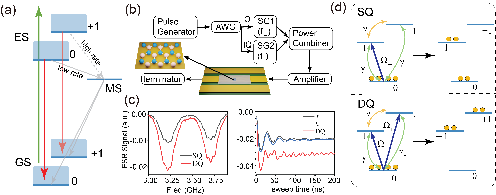

⟨ψ| notes / quantum sensing
Double-quantum control in hBN: from spin coherence to AC magnetometry
Two synchronized microwave tones let us use the outer states of a spin triplet to sense a magnetic field. Our recent work brings this control to boron-vacancy spin ensembles in hexagonal boron nitride.
A spin sensor converts a magnetic field into a relative phase, then converts that phase into a measurable population. The choice of states matters: it determines how strongly the phase responds to the field and which other shifts enter the measurement.
In our work accepted in Physical Review Applied, we use double-quantum (DQ) coherence in negatively charged boron vacancies, VB−, in hBN. We demonstrate control of the spin triplet, detect an externally applied 20 MHz magnetic field, and obtain a 2.57-fold improvement in signal-to-noise ratio over single-quantum (SQ) sensing in a matched comparison. Here I explain how those pieces fit together, and how they build on earlier DQ and AC-sensing experiments.
Choosing the two outer spin states
The ground state of VB− is a spin triplet, with states labelled by ms = 0, +1, and −1. A conventional SQ measurement uses a superposition of |0⟩ and one of the outer states. DQ sensing uses the relative phase between |+1⟩ and |−1⟩, whose spin projections differ by two.
In a simple axial-field picture, the two transition frequencies from |0⟩ are
Here γe is the electron gyromagnetic ratio in Hz/T, and Deff includes shifts shared by the two outer levels. Their difference cancels that common contribution while retaining twice the magnetic-field slope of either SQ transition. This approximation applies when transverse mixing is small compared with the axial Zeeman splitting.
Fang and colleagues used this idea in diamond NV centres through quantum beats between the outer spin states. It gives a useful way to reject temperature- or strain-induced shifts of the common splitting. The magnetic-noise response grows with the magnetic-signal response, however. As the ensemble work of Bauch and colleagues makes clear, the benefit depends on which noise source limits the experiment; DQ coherence alone does not guarantee a longer dephasing time.
Making DQ coherence in hBN
We address the two allowed transitions, |0⟩ ↔ |+1⟩ and |0⟩ ↔ |−1⟩, with two synchronized microwave tones. Their amplitudes, phases, and durations control how population moves through the three-level system and how coherence is prepared between the outer states. Subsequent pulses map the accumulated phase back to a population that can be read through spin-dependent fluorescence.
In our setup, the instruments share a 10 MHz reference. An arbitrary waveform generator controls the microwave IQ modulation, and the two tones are combined and delivered through a coplanar waveguide. Green laser pulses initialize and read out an ensemble of defects in an hBN flake. The measurements are at room temperature.
Dual-frequency DQ control has an established precedent in diamond: Mamin and colleagues incorporated it into multipulse magnetometry with near-surface NV centres. Bringing it to hBN requires control across a broadened ensemble of spin resonances. In our ensemble, DQ driving produces approximately twice the optical readout contrast of SQ driving. That measured contrast gain is distinct from the factor of two in the ideal magnetic phase response.

From a spin echo to an AC-field spectrum
A static frequency offset can be refocused by a spin echo. An oscillating field can accumulate phase through the same sequence if the spin inversion is timed to the field's sign change. The pulse timing therefore acts as a frequency filter. For an ideal DQ echo, the magnetic phase can be written as
The switching function y(t) changes sign under the refocusing operation. When its sign follows the AC field, successive parts of the integral add. Finite pulse duration and control errors affect the actual response, so this expression is a useful idealization for understanding the sequence.
Correlation spectroscopy compares two sensing intervals separated by a variable delay. Scanning that delay reveals an oscillation whose Fourier spectrum identifies the field frequency. Laraoui and colleagues developed this approach for resolving nuclear-spin signals near an NV centre, extending the accessible correlation time beyond a single electron-spin coherence interval.
For our external-field measurement, a nearby coil applies an RF magnetic field at 20 MHz. The correlation signal produces a Fourier peak at that frequency. The paper separately reports a feature near 46.3 MHz without an applied RF signal, attributed to hyperfine coupling to nearby nuclear spins; the 20 MHz experiment is the direct test with a deliberately applied field.

Qdyne: reading the difference frequency
Quantum heterodyne detection, or Qdyne, repeats a fixed sensing sequence against a stable classical clock. Each block prepares the spin, samples the field, and produces a fluorescence readout. The phase of the field relative to the sequence advances from block to block, leaving a beat pattern in the readout record.
This is a difference-frequency measurement. For a signal at fac and a timing reference at fref, the relevant detuning is δ = fac − fref. In the small-signal regime, the phase-sensitive part of the fluorescence follows this relative phase. Fourier analysis of the timed record recovers the beat; the reference and the selected frequency band then connect it to the applied field frequency.
The experiments of Schmitt and colleagues and Boss and colleagues established how this clock-referenced measurement can achieve frequency resolution far narrower than the inverse of one spin-coherence time. Each cycle can reinitialize the spin. A stable clock maintains the phase reference across successive readouts.
Three timescales have different roles. The sensing window sets the phase collected in each block and the filter response; the repetition period sets the sampling rate and its frequency aliases; the total record length sets the Fourier-bin spacing. Assigning an absolute frequency requires the reference and the appropriate alias band. Clock stability and the signal's own coherence ultimately limit the useful record length.
This approach already has an hBN foundation. Rizzato and colleagues demonstrated RF sensing and coherently averaged synchronized readout (CASR) with VB− ensembles. Our work adds DQ control to this sensing setting and compares its performance directly with SQ control.
What improves in the measurement?
Under the same experimental conditions, our Qdyne comparison gives a signal-to-noise ratio of 100 with SQ control and 257 with DQ control. The ratio is 2.57, rounded to 2.6 in the abstract.
| Control | Signal-to-noise ratio |
|---|---|
| Single quantum | 100 |
| Double quantum | 257 |
| DQ / SQ | 2.57 |
The phase response, optical contrast, and measured SNR describe different parts of the experiment. The final gain depends on pulse fidelity, ensemble inhomogeneity, photon collection, and noise as well as the chosen coherence. The 2.57-fold result is the measured SNR improvement in this comparison; an absolute sensitivity in T/√Hz would require field calibration and a measurement-time normalization.
What I would optimize next
The control needs to remain accurate across an ensemble. In NV magnetic microscopy, the DQ 4-Ramsey protocol of Hart and colleagues uses phase cycling to reject residual SQ contributions from imperfect pulses. That provides a useful direction for testing how pulse errors enter hBN DQ measurements. Measuring the response across detuning and microwave amplitude would help identify where the contrast and SNR gains survive.
The sensing comparison should then be extended to calibrated field amplitudes and matched acquisition times, with the noise floor tracked as the record grows. That would connect the present SNR result to an absolute sensitivity and identify whether microwave control, photon statistics, or long-term drift is the next limitation. DQ control gives us a stronger phase response and an experimentally improved readout; the next task is to preserve those gains through the full measurement.